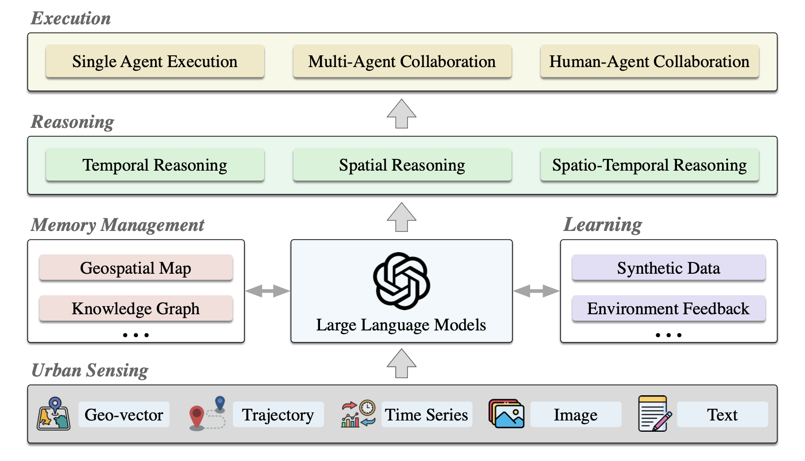
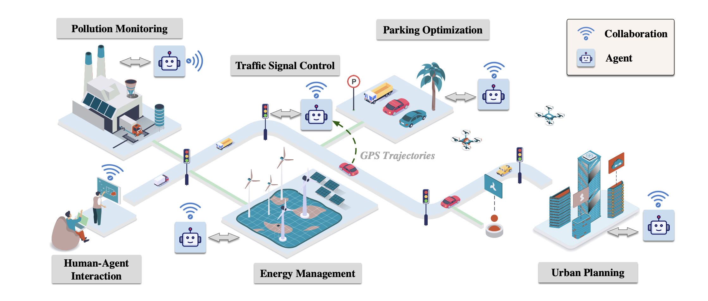
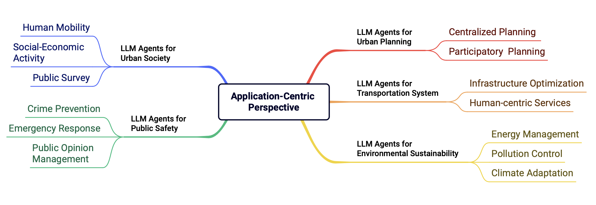

4 LLM - Urban Agents
Large Language Model Powered Intelligent Urban Agents: Concepts, Capabilities, and Applications
4.1 Información Básica
| Elemento | Detalle |
|---|---|
| Referencia corta | Han et al. (2025) |
| Título completo | Large Language Model Powered Intelligent Urban Agents: Concepts, Capabilities, and Applications |
| Revista / Volumen / DOI | https://doi.org/10.48550/arXiv.2507.00914 |
| Temática | Agentes urbanos potenciados por LLM; integración de IA y datos espaciales en la toma de decisiones urbanas |
| Contexto / Problema | Los sistemas urbanos inteligentes previos carecen de flexibilidad y generalización espacial-temporal. Los LLM ofrecen razonamiento multimodal y capacidades de ejecución autónoma para mejorar la eficiencia y escalabilidad en la gestión de ciudades |
4.2 Abstract
Original:
The long-standing vision of intelligent cities is to create efficient, livable, and sustainable urban environments using big data and artificial intelligence technologies. Recently, the advent of Large Language Models (LLMs) has opened new ways toward realizing this vision. With powerful semantic understanding and reasoning capabilities, LLMs can be deployed as intelligent agents capable of autonomously solving complex problems across domains. In this article, we focus on Urban LLM Agents, which are LLM-powered agents that are semi-embodied within the hybrid cyber-physical-social space of cities and used for system-level urban decision-making. First, we introduce the concept of urban LLM agents, discussing their unique capabilities and features. Second, we survey the current research landscape from the perspective of agent workflows, encompassing urban sensing, memory management, reasoning, execution, and learning. Third, we categorize the application domains of urban LLM agents into five groups: urban planning, transportation, environment, public safety, and urban society, presenting representative works in each group. Finally, we discuss trustworthiness and evaluation issues that are critical for real-world deployment, and identify several open problems for future research.
Traducción al español:
La visión de ciudades inteligentes busca entornos urbanos eficientes, habitables y sostenibles mediante big data y tecnologías de IA. Recientemente, la aparición de los Modelos de Lenguaje de Gran Tamaño (LLM) ha abierto nuevas vías para alcanzar esta visión. Con una profunda comprensión semántica y razonamiento, los LLM pueden funcionar como agentes inteligentes capaces de resolver autónomamente problemas complejos. En este artículo nos centramos en los Agentes Urbanos LLM, agentes potenciados por LLM que operan de forma semiembodida en el espacio ciber-físico-social de las ciudades para la toma de decisiones a nivel de sistema. Primero, introducimos el concepto y capacidades de estos agentes. Segundo, revisamos el estado del arte en cuanto a flujos de trabajo (percepción urbana, gestión de memoria, razonamiento, ejecución y aprendizaje). Tercero, clasificamos sus aplicaciones en cinco dominios: planificación urbana, transporte, medio ambiente, seguridad pública y sociedad urbana, ejemplificando resultados en cada dominio. Finalmente, discutimos la confiabilidad y evaluación para despliegue real e identificamos problemas abiertos para investigación futura.
4.3 Metodología
4.3.1 Flujo de trabajo
- Definición conceptual de Agentes Urbanos LLM.
- Revisión sistemática de la literatura según cinco módulos de agente: percepción urbana, gestión de memoria, razonamiento, ejecución y aprendizaje.
- Clasificación de aplicaciones en cinco dominios urbanos.
- Análisis de confiabilidad, evaluación y retos futuros.

4.3.2 Modelos / Algoritmos
Survey de técnicas generales de LLM (Transformer pre-entrenado, afinamiento por instrucciones, RLHF, RAG, Chain-of-Thought) y su integración con herramientas externas: simuladores, APIs urbanas, bases de datos espaciales.
4.3.3 Datos
Se describen insumos heterogéneos en la literatura: sensores urbanos (tráfico, calidad del aire), datos geovectoriales (POI, redes viales), series temporales, trayectorias GPS, imágenes satelitales y texto no estructurado (políticas, redes sociales). Estos datos se utilizan para ilustrar casos de uso y métodos de integración multimodal.
| Tipo | Fuente | Cobertura temporal |
|---|---|---|
| Geovector | POI, redes viales (PostGIS, OSM) | Variable según estudio |
| Series temporales | Sensores de tráfico, calidad del aire | Frecuencias horarias/diarias |
| Trayectorias GPS | Registros de movilidad | Estudios de caso puntuales |
| Imágenes | Satélite, cámaras urbanas | Desde 2000 en adelante |
| Texto | Documentos de planificación, social media | N/A |

4.3.4 Validación & Uncertainties
Las evaluaciones en los trabajos revisados varían: simulaciones de tráfico (métricas de demora y congestión), benchmarks temporales y espaciales (precisión en razonamiento), validación cualitativa por expertos urbanos.
| Métrica | Valor | Alcance | Notas |
|---|---|---|---|
| Demora promedio (s) | Según simulador | Intersecciones urbanas | LLMLight, CoLLMLight |
| Exactitud temporo-espacial | % de aciertos | Benchmarks CoTempQA, SpaRC | Varía por tarea; se utiliza Chain-of-Thought |
| Precisión de RAG | % documentos relevantes | PlanGPT, Spatial-RAG | Depende de calidad de embeddings |
4.3.5 Replicabilidad & Recursos
| Ítem | Sí/No | Detalle |
|---|---|---|
| Código abierto | Sí | Repositorio “Awesome-Urban-LLM-Agents” en GitHub |
| Datos públicos | Parcialmente | Algunas bases (OSM, benchmarks públicos), otras fuentes no compartidas |
| Docker/Scripts | N/A | No se especifica |
| Instrucciones RAG | Sí | Plantillas y ejemplos en repositorio Github |
4.4 Resultados Clave
- Urban LLM agents unifican cinco módulos (percepción, memoria, razonamiento, ejecución, aprendizaje).
- Identificadas 5 áreas de aplicación: planificación urbana, transporte, medio ambiente, seguridad pública y sociedad urbana.
- Herramientas de RAG y acceso a APIs potencian razonamiento multimodal y precisión.
- Modelos de control de tráfico basados en LLM reducen tiempos de espera en simulaciones (e.g., LLMLight).
- Desafíos en confiabilidad, interpretabilidad y adaptabilidad a datos reales.
4.5 Discusión
- Contribuciones:
- Marco conceptual y taxonomía de Urban LLM Agents.
- Revisión sistemática de flujos de trabajo y aplicaciones.
- Identificación de retos de confiabilidad y evaluación.
- Marco conceptual y taxonomía de Urban LLM Agents.
- Limitaciones:
- Predominio de simulaciones y datos sintéticos; escasa validación en despliegues reales.
- Heterogeneidad de fuentes de datos y falta de benchmarks estándar.
- Predominio de simulaciones y datos sintéticos; escasa validación en despliegues reales.
- Futuro:
- Integración de razonamiento causal y física de sistemas urbanos.
- Desarrollo de frameworks híbridos de coordinación multiagente.
- Validación en ambientes urbanos reales y escalabilidad a nivel de ciudad.
- Integración de razonamiento causal y física de sistemas urbanos.
4.6 Aplicabilidad en Chile
| Aspecto | Evaluación |
|---|---|
| Planificación Urbana | Adaptable para modelar políticas locales y regulación territorial chilena; requiere datos locales. |
| Transporte | Simuladores como SUMO pueden integrarse con LLM para control de semáforos en Santiago u otras ciudades. |
| Medio Ambiente | Monitoreo de calidad del aire y gestión hídrica mediante RAG con datos de sensores nacionales. |
| Seguridad Pública | Procesamiento de reportes policiales textuales para análisis de hotspots delictivos. |
| Sociedad Urbana | Análisis de sentimiento en redes sociales chilenas para percepción ciudadana. |

4.7 Madurez & Evidencia
| Eje | Nivel |
|---|---|
| Conceptualización | Avanzado |
| Implementación | Prototipo (simulación) |
| Validación real-world | Bajo |
| Disponibilidad recursos | Media |
4.8 Impacto en Políticas Públicas / ODS
Los Urban LLM Agents pueden contribuir a ODS 11 (Ciudades y comunidades sostenibles) al optimizar la planificación urbana y el transporte; ODS 13 (Acción por el clima) a través de monitoreo ambiental y gestión de recursos; y ODS 16 (Paz, justicia e instituciones sólidas) mediante la mejora de la seguridad pública y transparencia en la toma de decisiones urbanas.